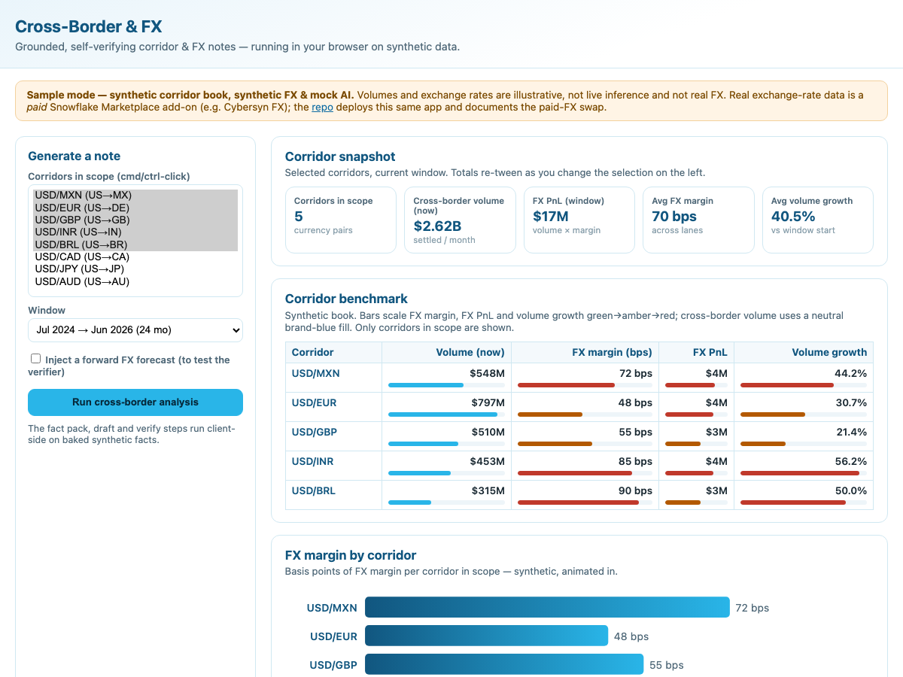
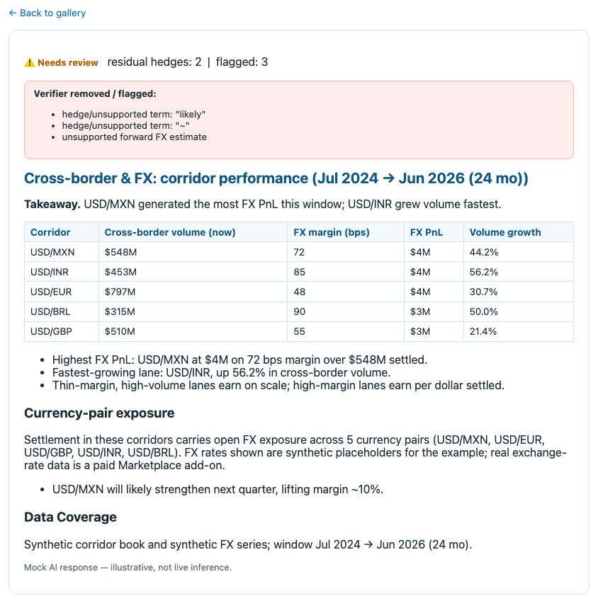

01 / See
A gallery of corridor / FX notes, each badged Verified or Needs review. Generate one that benchmarks every corridor on volume, FX margin and FX PnL.
SNOW PACK · FINANCIAL SERVICES · PAYMENTS
An app that reads a payments processor's cross-border book — settlement volume, FX margin (bps) and FX PnL by corridor, where every number is pulled from a governed semantic view and a verifier refuses to ship an unsupported claim — with a Cortex Agent you can explore in Snowsight.
Fully synthetic corridor book and FX series. Real exchange-rate data is a paid Marketplace add-on; this pack ships a synthetic FX series and is illustrative, not live inference.
You settle billions across dozens of corridors. The treasury question is always the same: which lanes are growing, and where is the FX margin actually earning? Putting an LLM in front of that book is easy; trusting its numbers is not. This pack shows an agent whose answers are grounded only in governed corridor data, with a verification step that catches anything unsupported — the difference between a toy and something a treasury owner will sign off.
A gallery of corridor / FX notes, each badged Verified or Needs review. Generate one that benchmarks every corridor on volume, FX margin and FX PnL.
Explore in your browser on synthetic data — no account, no install. Or run one SQL script in your own account to build the same objects on synthetic tables.
Run setup.sql to build the semantic view and agent, then deploy the Streamlit app. Swap in a paid Marketplace FX listing and your own settlements, and the same app runs on your real cross-border book. Adapt with Cortex Code.
Each corridor (origin→destination country / currency pair — USD/MXN, USD/EUR, USD/GBP, USD/INR, USD/BRL and more) carries monthly cross-border volume, a settled local-currency amount, an FX margin in basis points, and the resulting FX PnL:
fx_pnl_usd = cross_border_volume_usd × fx_margin_bps / 10000 — track where the FX desk makes money by corridor, and how volume is growing month over month.
